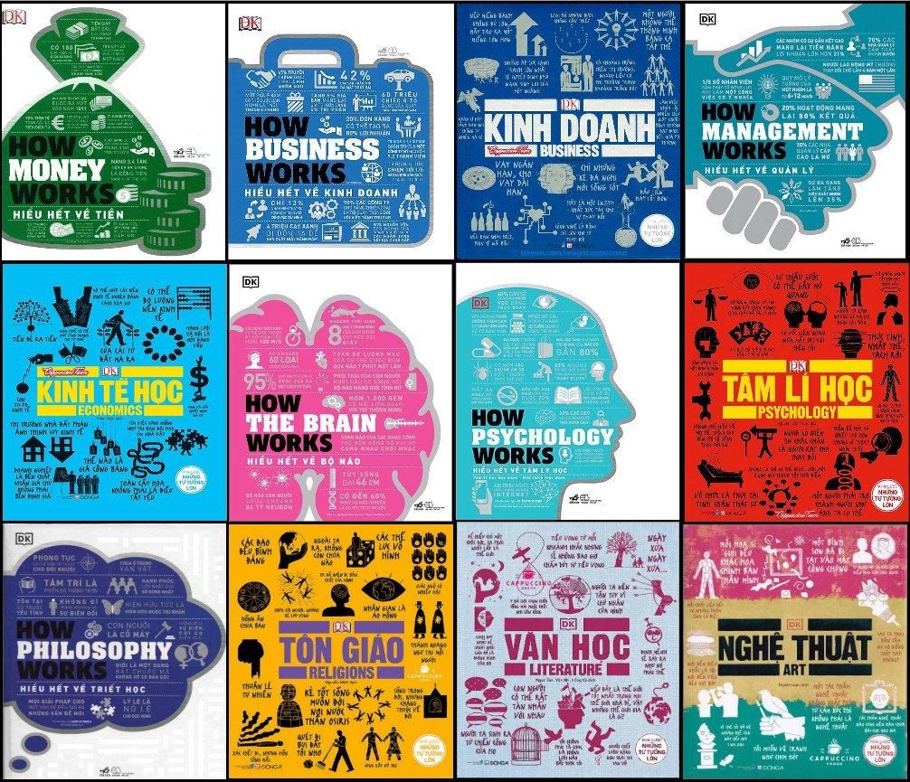

Hiểu hết về mọi thứ ⚙️ DK - book
DK - book

Nếu bạn hiểu cách một hệ thống vận hành, bạn sẽ hiểu vì sao thế giới lại như hiện tại.
Trong số rất nhiều bộ sách phổ thông khoa học trên thế giới, How... Works của DK Publishing là một trong những bộ sách được đánh giá cao nhất nhờ khả năng biến những chủ đề phức tạp thành kiến thức trực quan, dễ tiếp cận và đầy hứng thú. Với triết lý "Visual Learning" (Học bằng hình ảnh),
Điều gì làm nên sự khác biệt?
How... Works không cố gắng trình bày kiến thức theo lối hàn lâm.
Thay vào đó, mỗi chủ đề được chia thành các "khối kiến thức" nhỏ, sử dụng:
• Infographic trực quan
• Minh họa màu sắc rõ ràng
• Sơ đồ, biểu đồ, timeline
• Ví dụ thực tế
• Ngôn ngữ ngắn gọn, dễ hiểu
Bạn có thể đọc liên tục từ đầu đến cuối, hoặc mở ngẫu nhiên bất kỳ trang nào và vẫn học được điều mới.
Đây là kiểu sách rất phù hợp với cách tiếp thu thông tin của thời đại Internet: ít chữ hơn, nhiều hình hơn nhưng vẫn giữ được chiều sâu của kiến thức.
Không chỉ trả lời "Cái gì?"
Điểm hay nhất của bộ sách nằm ở chữ Works.
Thay vì chỉ nói:
• Tiền là gì?
• Não là gì?
• Kinh tế là gì?
Bộ sách luôn cố gắng trả lời:
• Tiền vận hành như thế nào?
• Bộ não xử lý thông tin ra sao?
• Doanh nghiệp tạo ra lợi nhuận bằng cách nào?
• Thị trường vận động vì sao?
• Tư duy triết học được hình thành như thế nào?
Người đọc không chỉ ghi nhớ khái niệm mà còn hiểu được cơ chế phía sau chúng.
Những cuốn sách nổi bật
Tại Việt Nam, nhiều đầu sách trong bộ đã được dịch và phát hành, bao gồm:
• Hiểu hết về Tiền (How Money Works)
• Hiểu hết về Kinh doanh (How Business Works)
• Hiểu hết về Quản lý (How Management Works)
• Hiểu hết về Kinh tế học (Economics)
• Hiểu hết về Bộ não (How the Brain Works)
• Hiểu hết về Tâm lý học (How Psychology Works)
• Hiểu hết về Triết học (How Philosophy Works)
• Hiểu hết về Tôn giáo (Religions)
• Hiểu hết về Văn học (Literature)
• Hiểu hết về Nghệ thuật (Art)
Ngoài ra, DK còn mở rộng dòng How... Works sang nhiều lĩnh vực khác như khoa học, không gian, cơ thể người, công nghệ... với cùng phong cách trình bày trực quan đặc trưng.
Phù hợp với ai?
Bộ sách này đặc biệt phù hợp nếu bạn:
• Muốn xây dựng nền tảng kiến thức đa lĩnh vực.
• Muốn hiểu bản chất thay vì học thuộc lòng.
• Muốn đọc những chủ đề khó nhưng không quá hàn lâm.
• Là sinh viên hoặc người mới bắt đầu tìm hiểu một lĩnh vực.
• Muốn có tài liệu tra cứu nhanh khi cần.
Ngay cả những người đã có nền tảng cũng thường dùng bộ sách như một cách ôn tập và hệ thống hóa kiến thức.
Có đủ sâu không?
Giá trị lớn nhất của bộ sách là giúp người đọc:
• hình thành bức tranh tổng thể;
• hiểu các khái niệm cốt lõi;
• nhìn thấy mối liên hệ giữa các ý tưởng;
• biết mình nên đào sâu vào đâu tiếp theo.
Nói cách khác, đây là điểm khởi đầu rất tốt.
Sách đặc biệt phù hợp để xây dựng kiến thức nền và khơi gợi sự tò mò, trước khi chuyển sang các tài liệu chuyên sâu hơn.
Tóm lại 🔎
Thay vì cung cấp những mẩu kiến thức rời rạc, bộ sách giúp người đọc nhìn thấy cách các hệ thống vận hành, từ tiền tệ, doanh nghiệp, kinh tế, tâm lý cho đến triết học và nghệ thuật.
Nếu phải giới thiệu một bộ sách để xây dựng nền tảng tri thức phổ quát, đây chắc chắn là một trong những lựa chọn đáng đọc nhất.